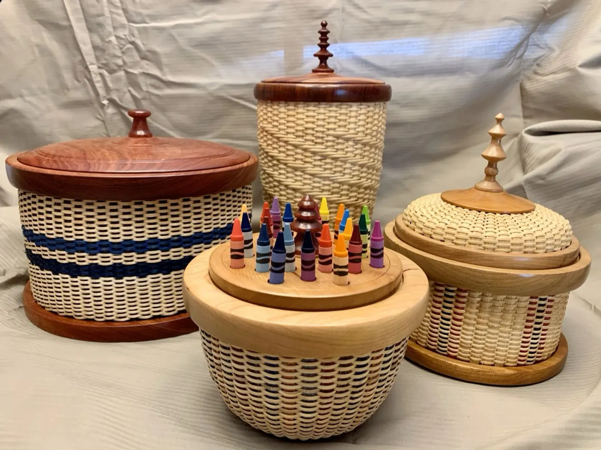
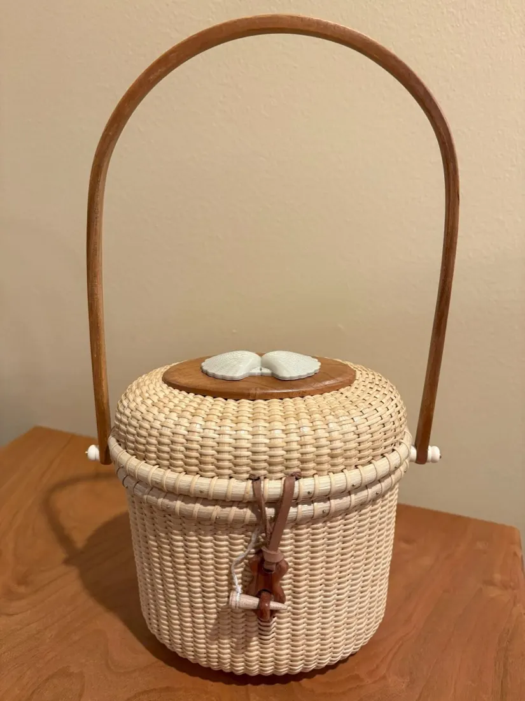
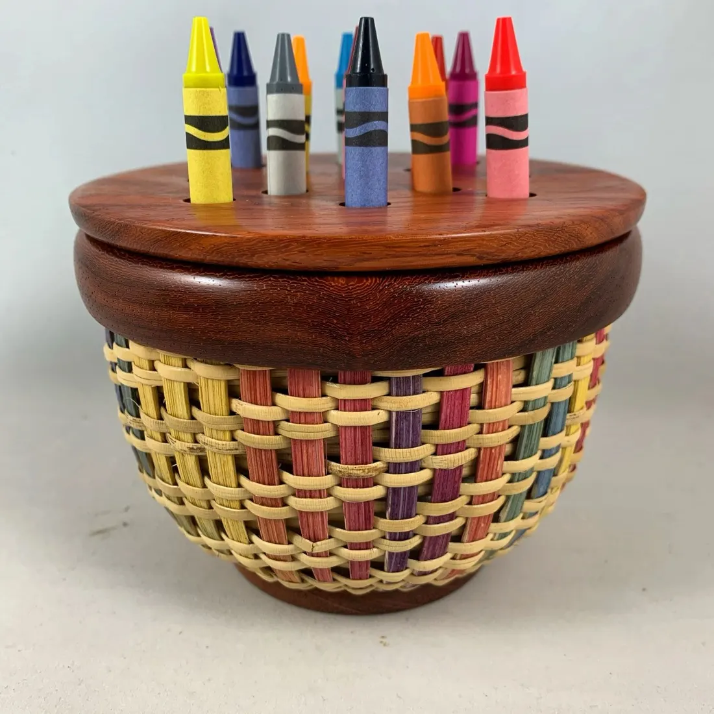
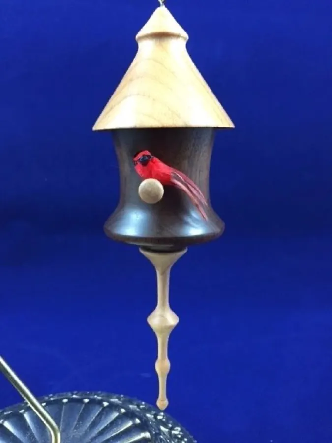
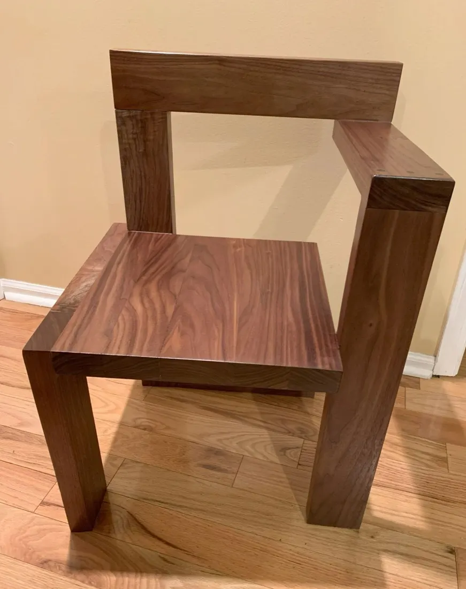
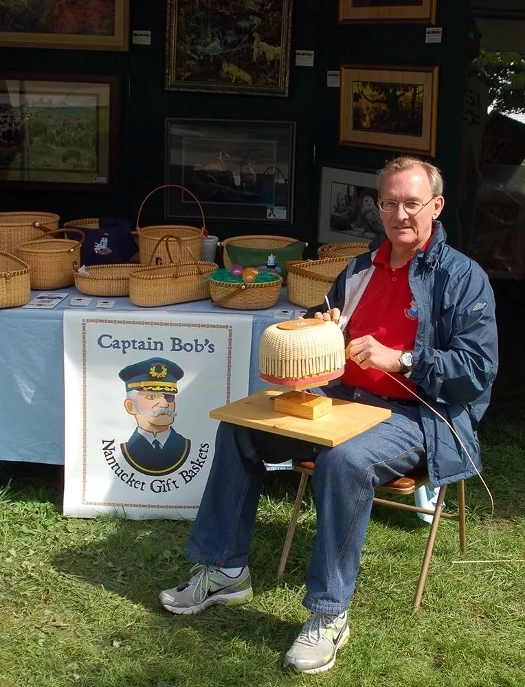
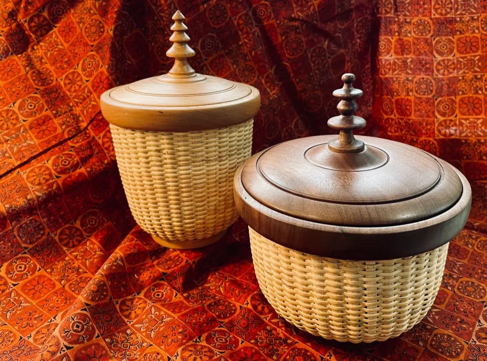
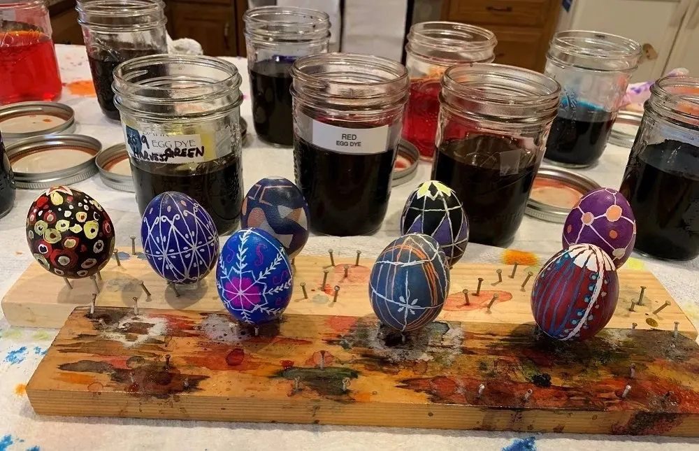
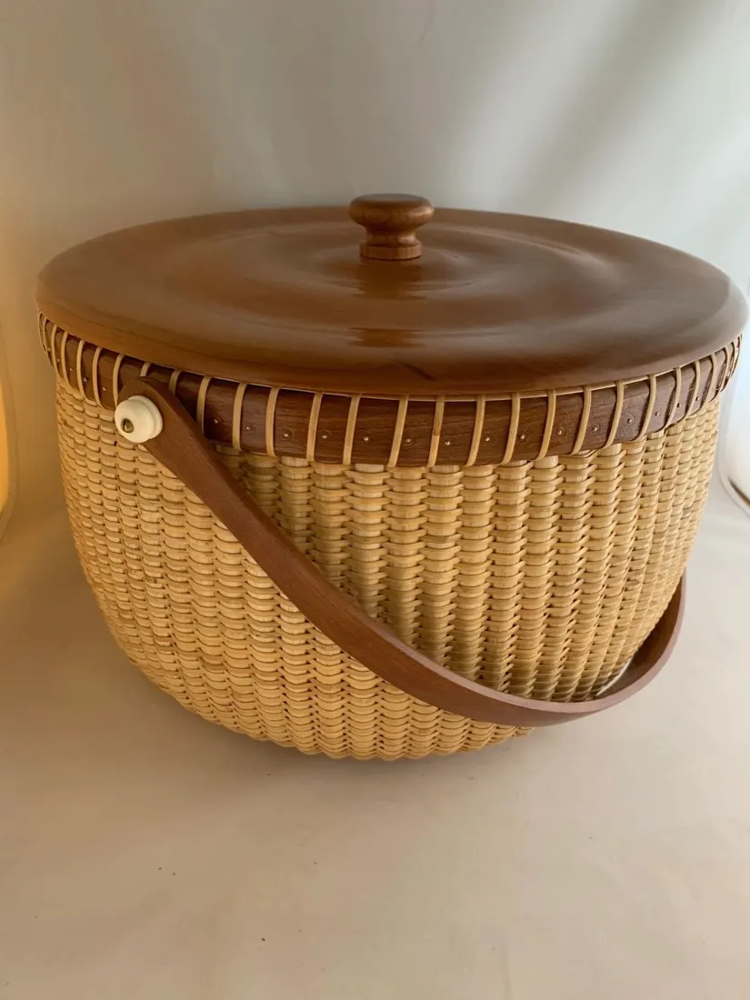

Baskets and woodwork
I enjoy the variety of woodturning, woodworking and basket weaving. Each piece is a handmade, functional and stylish keepsake.






Experience and creativity
- Master Artisan status by the Pennsylvania Guild of Craftsmen
- Member, Keystone Woodturners
Workshops
I teach these classes through the Pennsylvania Guild of Craftsmen, and registration is with the Guild. Write to me for the next dates.
Nantucket basket workshopWoven on a mold
You will learn the process of weaving a Nantucket basket on a mold. Your basket will be between 4" and 6" in diameter.
Turn a penGetting started in woodturning
Woodturning is easy to learn and fun to do. You will learn the ABCs of turning: the types of woodturning, which tools to use for what you are turning, sharpening tools, and woodturning safety. You will turn a spindle and a small bowl using the proper tools and turning fundamentals.
A face shield and a dust mask are required. No loose clothing.
Pysanky eggBeginner, two hours
Learn the art of making pysanky, Ukrainian Easter eggs. Dyes, beeswax and a stylus are used to decorate the eggs with traditional Ukrainian designs. All materials are included in the tuition.


Tell me which class you're interested in.
Ask Bob about the next dates
Let's get started
Contact me today to begin discussing your unique Nantucket basket, wooden bowl or woodworking project. These make great one-of-a-kind gifts. Call or email me.
Email raa108@yahoo.com